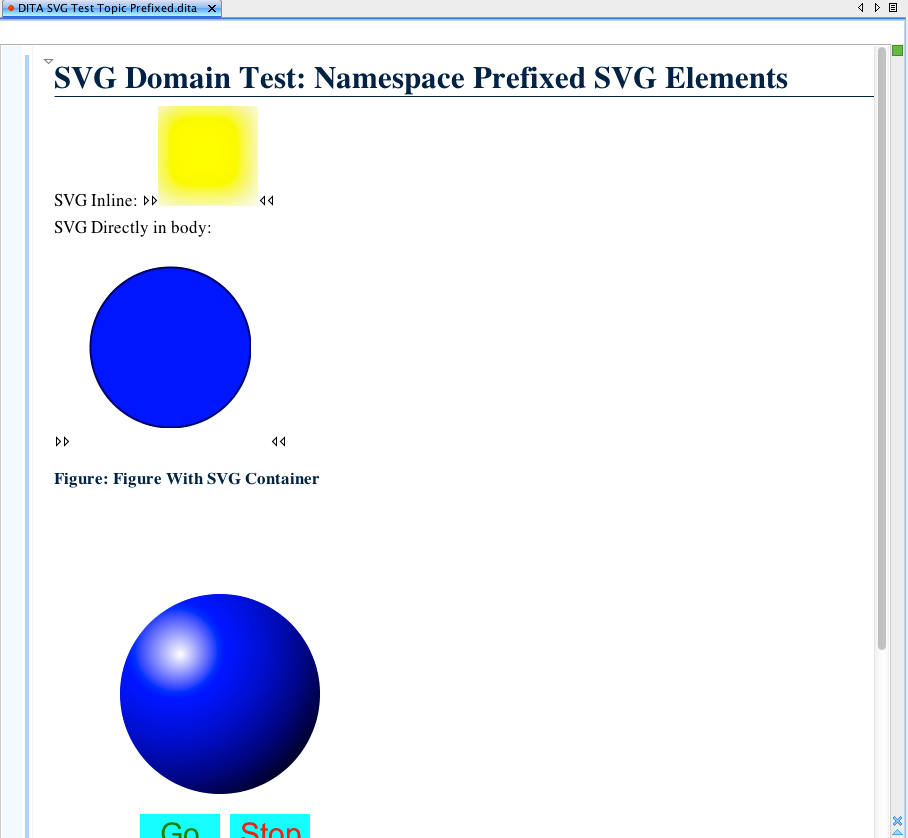

Official domain for SVG
The SVG vocabulary is mature and well-established. It is now a formal part of both HTML5 and EPUB3. It is supported to one degree or another by the latest versions of most Web browsers. It is supported by the main commercial XSL-FO engines.
SVG is used by many existing DITA communities. Through DITA 1.2, SVG can only be used by reference without doing custom specialization. However, it is convenient in many cases to use SVG inline within topic content.
An SVG integration supports any context in which graphics of any sort need to be presented but where it is convenient or necessary to have the graphic content inline rather than used by reference. For example, to facilitate localization of graphic content.
This feature adds a new optional vocabulary module. Users who need it will appreciate having it readily available. Users who do not need it may safely ignore it. The general architecture and semantics of DITA are not affected by this proposal.
Specializes topic/foreign. Allows as content the <svg:svg> element from the SVG 1.1 vocabulary, <data>, or <data-about>, as a repeating OR group.
Because the SVG vocabulary includes some elements that have the same local name as DITA elements, SVG included in DTD-based or RelaxNG-based documents must use prefixed tagnames. Documents that use XSD schemas may use unprefixed tagnames.
There do no appear to be normative XSD or RelaxNG versions of the SVG vocabulary.
svgDomain.ent:
<?xml version="1.0" encoding="utf-8"?>
<!-- =============================================================
DITA SVG Domain
Defines a specialization of <foreign> that contains
SVG markup.
DITA 1.3
Copyright (c) 2012 OASIS Open
============================================================= -->
<!-- ============================================================= -->
<!-- Formatting DOMAIN ENTITIES -->
<!-- ============================================================= -->
<!-- SVG elements must be prefixed, otherwise they conflict with
existing DITA elements (e.g., <desc> and <title>.
-->
<!ENTITY % NS.prefixed "INCLUDE" >
<!ENTITY % SVG.prefix "svg" >
<!ENTITY % svg-d-foreign
"svg_container
"
>
<!ENTITY svg-d-att
"(topic svg-d)"
>
<!-- ================== End DITA SVG Domain Entities ============ -->
<?xml version="1.0" encoding="utf-8"?>
<!-- =============================================================
DITA SVG Domain
Defines a specialization of <foreign> that contains
SVG markup.
DITA 1.3
Copyright (c) 2012 OASIS Open
============================================================= -->
<!ENTITY % svg_container "svg_container" >
<!ENTITY % svg11.dtd
SYSTEM "svg11/svg11.dtd"
>%svg11.dtd;
<!-- ============================================================= -->
<!-- ELEMENT NAME ENTITIES -->
<!-- ============================================================= -->
<!-- ============================================================= -->
<!-- ELEMENT DECLARATIONS -->
<!-- ============================================================= -->
<!ENTITY % svg_container.content
"
(%data; |
%data-about; |
%SVG.pfx;svg)*
"
>
<!ENTITY % svg_container.attributes
"
%id-atts;
%localization-atts;
base
CDATA
#IMPLIED
%base-attribute-extensions;
outputclass
CDATA
#IMPLIED
"
>
<!ELEMENT svg_container %svg_container.content; >
<!ATTLIST svg_container %svg_container.attributes; >
<!-- ============================================================= -->
<!-- SPECIALIZATION ATTRIBUTE DECLARATIONS -->
<!-- ============================================================= -->
<!ATTLIST svg_container %global-atts; class CDATA "+ topic/foreign svg-d/svg_container ">
<!-- ================== End SVG Domain ==================== -->
<?xml version="1.0" encoding="UTF-8"?>
<xs:schema
xmlns:xs="http://www.w3.org/2001/XMLSchema"
xmlns:svg="http://www.w3.org/2000/svg"
elementFormDefault="qualified">
<xs:group name="svg-d-foreign">
<xs:sequence>
<xs:choice>
<xs:element ref="svg_container"/>
</xs:choice>
</xs:sequence>
</xs:group>
<xs:group name="svg_container.content">
<xs:choice minOccurs="0" maxOccurs="unbounded">
<xs:any namespace="http://www.w3.org/2000/svg" processContents="lax"/>
<xs:group ref="data.elements.incl" minOccurs="0"/>
</xs:choice>
</xs:group>
<xs:attributeGroup name="svg_container.attributes">
<xs:attribute name="outputclass" type="xs:string"/>
<xs:attributeGroup ref="global-atts"/>
<xs:attributeGroup ref="univ-atts"/>
</xs:attributeGroup>
<xs:complexType name="svg_container.class" mixed="false">
<xs:sequence>
<xs:group ref="svg_container.content"/>
</xs:sequence>
<xs:attributeGroup ref="svg_container.attributes"/>
</xs:complexType>
<xs:element name="svg_container">
<xs:annotation>
<xs:documentation>
The svg_container (<<keyword>svg_container</keyword>>) element
contains zero or more SVG graphics, along with optional <<keyword>data</keyword>>
or <<keyword>data-about</keyword>> elements, which act as metadata for the
graphics.
</xs:documentation>
</xs:annotation>
<xs:complexType mixed="false">
<xs:complexContent>
<xs:extension base="svg_container.class">
<xs:attribute ref="class" default="+ topic/foreign svg-d/svg_container "/>
</xs:extension>
</xs:complexContent>
</xs:complexType>
</xs:element>
</xs:schema>
# ===============================================================
# SVG Domain Module
#
# Defines a specialization of <foreign> that contains
# SVG markup.
#
# DITA 1.3
#
# Copyright (c) 2012 OASIS Open
# ===============================================================
namespace a = "http://relaxng.org/ns/compatibility/annotations/1.0"
namespace svg = "http://www.w3.org/2000/svg"
# Define the domain values of this module
domains-atts-value |= "(topic svg-d)"
# Define domain extension patterns
svg-d-foreign =
svg_container.element
# Extend the patterns with the domain contribution
foreign |= svg-d-foreign
# Define elements content and attributes
# Stub for SVG content, for which there appears
# to be no normative RelaxNG schema.
# LONG NAME: SVG Container
svg_container.content =
(
element svg:svg {
(element svg;*)*
} |
data |
data-about
)*
svg_container.attributes =
univ-atts,
attribute outputclass { text }?
svg_container.element =
element svg_container {
svg_container.attlist,
svg_container.content
}
svg_container.attlist &= svg_container.attributes
#
# End of module
#
<topic id="svg-test-topic-01">
<title>SVG Domain Test: Namespace Prefixed SVG Elements</title>
<body>
<p>SVG Inline: <svg_container>
<svg:svg
width="100"
height="100">
<svg:defs>
<svg:filter
id="f1"
x="0"
y="0">
<svg:feGaussianBlur
in="SourceGraphic"
stdDeviation="15"/>
</svg:filter>
</svg:defs>
<svg:rect
width="90"
height="90"
stroke="green"
stroke-width="3"
fill="yellow"
filter="url(#f1)"/>
</svg:svg>
</svg_container></p>
<p>SVG Directly in body:</p>
<svg_container>
<svg:svg width="200" height="200">
<svg:ellipse cx="100" cy="100" rx="80" ry="80" style="fill:blue;
stroke:rgb(0,0,100);stroke-width:2"/>
</svg:svg>
</svg_container>
<fig>
<title>Figure With SVG Container</title>
<svg_container>
<svg:svg width="4in" height="6in" version="1.1"
>
<svg:circle cx="150" cy="200" r="100" fill="url(#grad_blue)" >
<svg:animate attributeName="r" begin="Go.click" end="Stop.click" dur="4s"
values="100; 0; 100" repeatCount="indefinite"/>
</svg:circle>
<svg:radialGradient id="grad_blue" cx="20%" cy="20%" r="100%" fx="30%" fy="30%">
<svg:stop stop-color="white" offset="0"/>
<svg:stop stop-color="blue" offset="25%"/>
<svg:stop stop-color="rgb(0,0,192)" offset="50%"/>
<svg:stop stop-color="rgb(0,0,127)" offset="70%"/>
<svg:stop stop-color="rgb(0,0,64)" offset="85%"/>
<svg:stop stop-color="rgb(0,0,0)" offset="100%"/>
</svg:radialGradient>
<svg:g id="Go">
<svg:rect x="70" y="320" height="40" width="80" fill="aqua"/>
<svg:text x="90" y="350" font-size="30" fill="green">Go </svg:text>
</svg:g>
<svg:g id="Stop">
<svg:rect x="160" y="320" height="40" width="80" fill="aqua"/>
<svg:text x="170" y="350" font-size="30" fill="red">Stop</svg:text>
</svg:g>
</svg:svg>
</svg_container>
</fig>
</body>
</topic>
